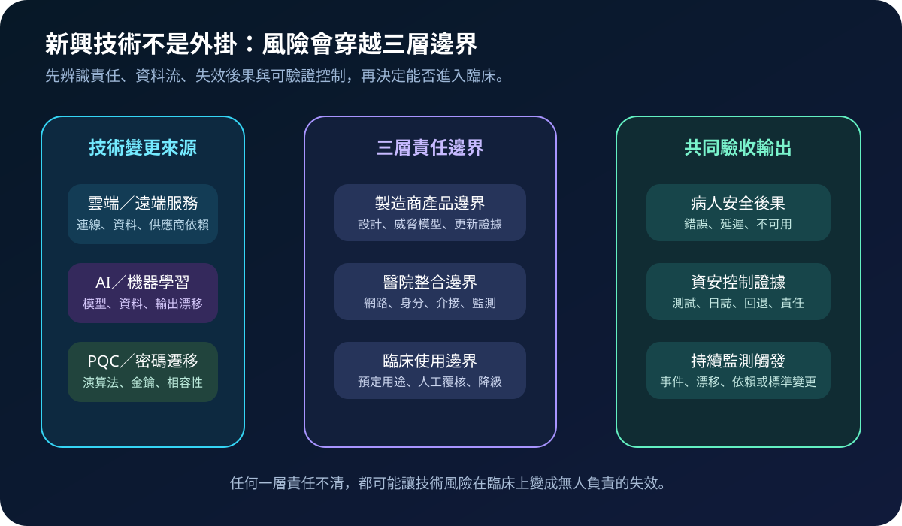
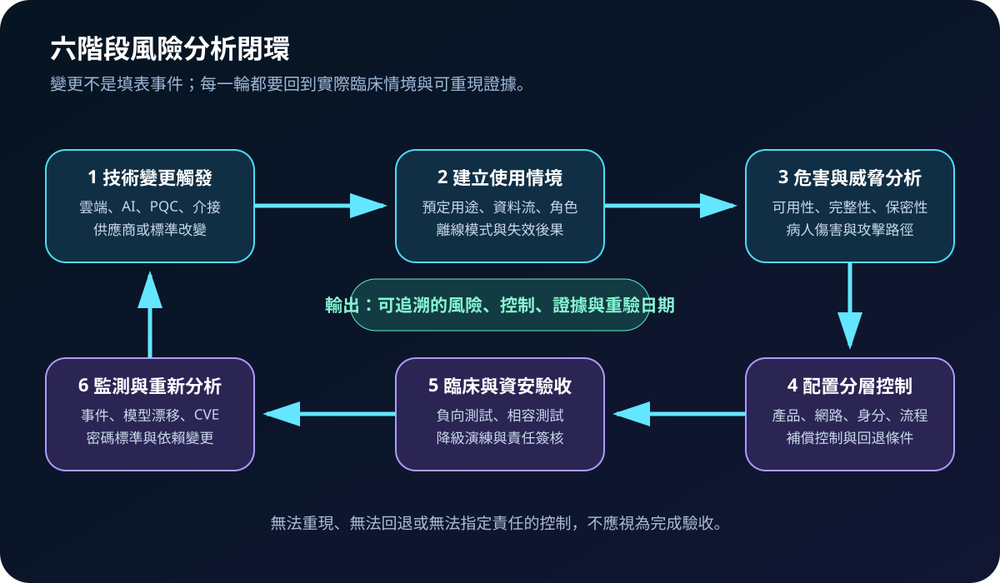
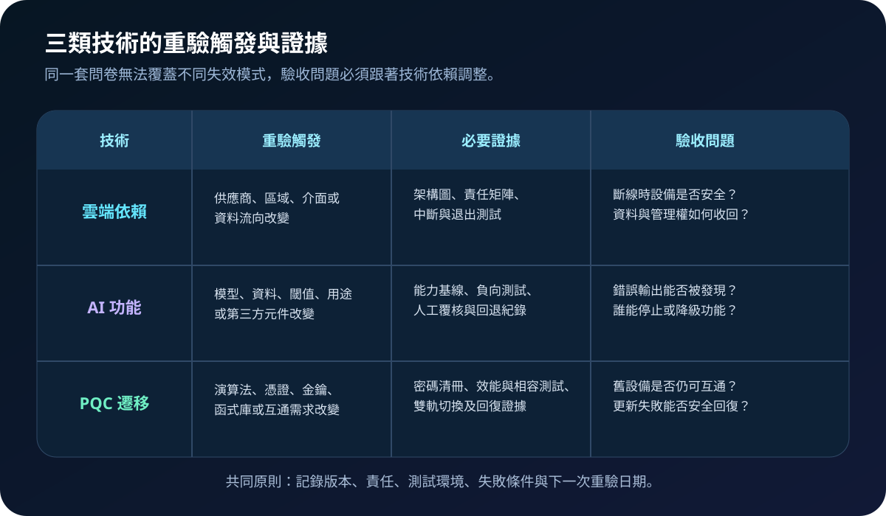

醫療資安國際觀察 · 2026-10-14
醫療設備採用雲端、AI 與後量子密碼時如何重做風險分析
作者：Dr. William｜醫療資訊與資安治理實務工作者
醫療設備接上雲端、導入 AI 或更換密碼機制後，舊版風險檔案可能不再涵蓋新的資料流、供應商依賴、失效模式與臨床後果。
名詞解釋：風險分析不是一次性文件
資安風險分析是辨識資產、威脅、弱點、攻擊路徑、控制與剩餘風險的持續活動；醫療設備還要連結病人傷害、預定用途與臨床可用性。變更觸發是要求重新分析的事件，例如雲端架構、模型、資料來源、密碼函式庫、介面、供應商或使用情境改變。
國際現況與適用邊界
美國 FDA 於 2026 年 2 月發布醫療設備上市前資安最終指引，要求風險管理貫穿產品生命週期，並將安全架構、威脅模型、資安風險評估、SBOM、測試與標示納入文件。MITRE 於 2026 年 4 月 22 日發布討論文件，聚焦雲端、人工智慧與後量子密碼如何改變醫療設備風險分析。NIST 於 2026 年 8 月更新後量子密碼標準化頁面，列出已發布標準與持續評估中的演算法。
台灣適用原則：上述 FDA 要求適用於其美國法規範圍，MITRE 文件屬技術討論，NIST 標準也不等同台灣醫療器材核准要求。台灣醫療機構可借用其風險問題與證據結構，但採購、個資、醫療器材、資安與臨床責任仍須依台灣法令、主管機關及院內程序辦理。
規劃：用變更清冊連結責任與驗收
範圍應涵蓋設備版本、雲端與第三方服務、模型及資料來源、加密依賴、介接系統、臨床流程與離線模式。角色至少包括製造商、醫工、資訊、資安、臨床、採購及風險管理。驗收指標可包含變更覆蓋率、高風險情境測試完成率、未關閉風險數、回退成功率、監測資料完整率與供應商回應時限。
實作：六階段風險分析閉環
- 觸發：由版本、架構、模型、標準或供應商變更啟動重驗。
- 情境：確認預定用途、資料流、使用者、離線模式與傷害後果。
- 分析：同時評估可用性、完整性、保密性及臨床安全。
- 控制：把控制分配到產品、網路、身分、流程與人工覆核。
- 驗收：執行負向、相容、效能、降級與回退測試。
- 監測：以事件、漂移、弱點及依賴變更決定下一輪分析。

風險：三類技術不能共用同一套答案
雲端風險常集中在服務中斷、資料流向與退出能力；AI 風險還涉及模型或資料改變、錯誤輸出及人工覆核；PQC 遷移則可能造成效能、金鑰、憑證與舊設備互通問題。常見失敗包括只收供應商問卷、以合規聲明代替技術測試、忽略臨床降級、沒有回退路徑，以及風險接受未標明期限與責任層級。

可執行清單
- 是否有技術、版本、供應商與介接依賴清冊？
- 每項變更是否連到實際臨床情境與病人安全後果？
- 製造商與醫院各自負責的控制是否明確？
- 雲端中斷、AI 錯誤及密碼遷移失敗是否有回退測試？
- 測試是否包含負向、相容、效能、降級與復原情境？
- 事件、漂移、CVE 或標準變更後是否會自動啟動重驗？
來源
- U.S. FDA｜Cybersecurity in Medical Devices: Quality Management System Considerations and Content of Premarket Submissions（發布：2026-02-03；查閱：2026-10-14）
- MITRE｜Cybersecurity Risk Analysis for Medical Devices in the Era of Evolving Technologies（發布：2026-04-22；文件性質：討論文件；查閱：2026-10-14）
- NIST｜Post-Quantum Cryptography Standardization（更新：2026-08-05；查閱：2026-10-14）
內容說明
本文依健康台灣深耕計畫相關治理內容整理，並參考 FDA、MITRE 與 NIST 公開資料，提出醫療設備新興技術風險分析閉環；不把外國指引或討論文件視為台灣法定義務，也不取代主管機關公告、醫療器材品質系統、臨床專業判斷或法律意見。